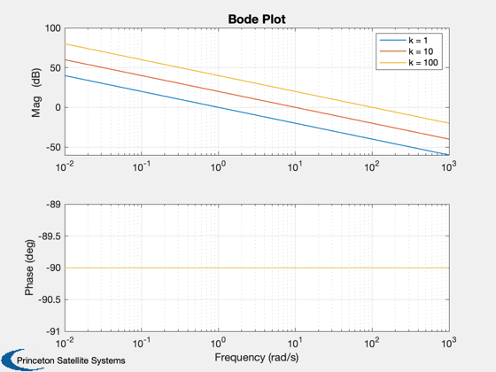
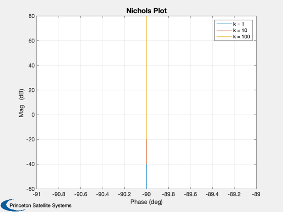
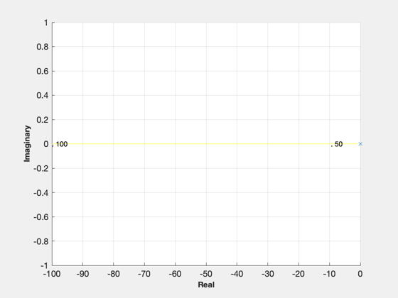

Simple controller.
Controls a double integrator. ------------------------------------------------------------------------- See also @statespace/statespace.m, FResp, RootLocus, Series, Plot2D -------------------------------------------------------------------------
Contents
%-------------------------------------------------------------------------- % Copyright (c) 2003 Princeton Satellite Systems, Inc. % All rights reserved. %--------------------------------------------------------------------------
The plant model-a single axis spacecraft with an inertia of 1
%--------------------------------------------------------------
a = 0;
b = 1;
c = 1;
d = 0;
The frequency range for plotting
%---------------------------------
w = logspace(-2,3,200);
aC = 0;
bC = 0;
cC = 0;
Initialize m and p
%-------------------- m = []; p = []; gain = [1 10 100]; for k = 1:3 [aS, bS, cS, dS] = Series( a, b, c, d, aC, bC, cC, gain(k) ); [m(k,:), p(k,:)] = FResp( aS, bS, cS, dS, 1, 1, w); end m = 20*log10(m); yL = {'Mag (dB) ' 'Phase (deg)'}; Plot2D( w, [m;p], 'Frequency (rad/s)', yL, 'Bode Plot', 'xlog', ['1:3';'4:6'] ); legend('k = 1','k = 10','k = 100') Plot2D( p, m, yL{2}, yL{1}, 'Nichols Plot' ); legend('k = 1','k = 10','k = 100') g = statespace(a,b,c,d); RootLocus( g, logspace(0,2) ) %-------------------------------------- % $Date$ % $Id: 476336b785ac6306a2657ee8f92efd5b9c44b0b6 $  